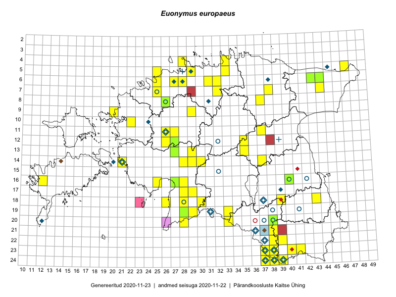

Euonymus europaeus
Uuendatud: 2016-12-07
Kaardile koondatud taksonid: Euonymus europaeus L.

Kaart põhineb 88 vaatlusel. Taime on leitud 47 ruudust.
| Ruut | Vaatleja(d) | Vaatlusaeg | Kirje tüüp | Viide andmebaasikirjele |
|---|---|---|---|---|
| 16-25 | Peedu Saar, Liina Oja | 2015-05-21 | ruut/ala | vaata PlutoFis |
| 16-25 | Peedu Saar, Liina Oja | 2015-05-21 | punkt | vaata PlutoFis |
| 18-28 | Peedu Saar, Liina Oja | 2015-05-20 | punkt | vaata PlutoFis |
| 18-28 | Peedu Saar, Liina Oja | 2015-05-20 | punkt | vaata PlutoFis |
| 18-26 | Peedu Saar, Liina Oja | 2015-05-20 | ruut/ala | vaata PlutoFis |
| 18-26 | Peedu Saar, Liina Oja | 2015-05-20 | punkt | vaata PlutoFis |
| 13-27 | Toomas Kukk, Indrek Tammekänd | 2015-05-09 | punkt | vaata PlutoFis |
| 13-35 | Peedu Saar, Liina Oja | 2015-06-12 | punkt | vaata PlutoFis |
| 05-47 | Toomas Kukk, Eerik Leibak | 2015-04-26 | ruut/ala | vaata PlutoFis |
| 05-33 | Rein Kalamees, Kersti Püssa | 2015-06-02 | ruut/ala | vaata PlutoFis |
| 23-37 | Toomas Kukk, Eerik Leibak | 2014-04-21 | punkt | vaata PlutoFis |
| 14-28 | Ott Luuk, Hannes Pehlak | 2015-06-10 | ruut/ala | vaata PlutoFis |
| 20-28 | Ott Luuk, Eerik Leibak, Liisa Rennel | 2015-05-20 | ruut/ala | vaata PlutoFis |
| 20-28 | Ott Luuk, Eerik Leibak, Liisa Rennel | 2015-05-20 | punkt | vaata PlutoFis |
| 23-37 | Eeva-Maria Jeletsky, Tarmo Niitla | 2015-07-15 | punkt | vaata PlutoFis |
| 23-37 | Eeva-Maria Jeletsky, Tarmo Niitla | 2015-07-15 | punkt | vaata PlutoFis |
| 23-37 | Eeva-Maria Jeletsky, Tarmo Niitla | 2015-07-15 | punkt | vaata PlutoFis |
| 23-38 | Eeva-Maria Jeletsky, Tarmo Niitla | 2015-07-17 | punkt | vaata PlutoFis |
| 24-37 | Eeva-Maria Jeletsky, Tarmo Niitla | 2015-07-16 | punkt | vaata PlutoFis |
| 24-37 | Eeva-Maria Jeletsky, Tarmo Niitla | 2015-07-16 | punkt | vaata PlutoFis |
| 24-37 | Eeva-Maria Jeletsky, Tarmo Niitla | 2015-07-16 | punkt | vaata PlutoFis |
| 24-37 | Eeva-Maria Jeletsky, Tarmo Niitla | 2015-07-16 | punkt | vaata PlutoFis |
| 23-37 | Eeva-Maria Jeletsky, Tarmo Niitla | 2015-07-15 | ruut/ala | vaata PlutoFis |
| 23-38 | Eeva-Maria Jeletsky, Tarmo Niitla | 2015-07-17 | ruut/ala | vaata PlutoFis |
| 24-37 | Eeva-Maria Jeletsky, Tarmo Niitla | 2015-07-16 | ruut/ala | vaata PlutoFis |
| 18-43 | Maret Gerz, Jaak-Albert Metsoja | 2015-05-20 | ruut/ala | vaata PlutoFis |
| 23-40 | Eeva-Maria Jeletsky, Tarmo Niitla | 2015-08-05 | punkt | vaata PlutoFis |
| 23-40 | Eeva-Maria Jeletsky, Tarmo Niitla | 2015-08-05 | ruut/ala | vaata PlutoFis |
| 07-44 | Meeli Mesipuu, Liina Oja | 2015-04-27 | ruut/ala | vaata PlutoFis |
| 14-30 | Liina Oja, Ott Luuk | 2015-05-10 | ruut/ala | vaata PlutoFis |
| 14-29 | Liina Oja, Ott Luuk | 2015-05-10 | ruut/ala | vaata PlutoFis |
| 14-30 | Liina Oja, Ott Luuk | 2015-05-10 | punkt | vaata PlutoFis |
| 13-29 | Liina Oja, Ott Luuk | 2015-05-09 | punkt | vaata PlutoFis |
| 18-30 | Mari Metsoja, Jaak-Albert Metsoja | 2015-06-08 | ruut/ala | vaata PlutoFis |
| 07-25 | Mari Metsoja, Jaak-Albert Metsoja | 2016-05-15 | ruut/ala | vaata PlutoFis |
| 07-38 | Kaili Orav, Silvia Pihu | 2015-06-17 | ruut/ala | vaata PlutoFis |
| 07-38 | Kaili Orav, Silvia Pihu | 2015-06-17 | punkt | vaata PlutoFis |
| 17-28 | Meeli Mesipuu | 2016-05-22 | punkt | vaata PlutoFis |
| 12-35 | Ott Luuk, Liina Oja | 2015-05-11 | punkt | vaata PlutoFis |
| 11-37 | Ulvi Selgis | 2015-10-10 | ruut/ala | vaata PlutoFis |
| 22-39 | Kaili Kattai | 2015-05-29 | ruut/ala | vaata PlutoFis |
| 22-39 | Kaili Kattai | 2015-05-29 | punkt | vaata PlutoFis |
| 20-38 | Kaili Kattai | 2015-05-30 | ruut/ala | vaata PlutoFis |
| 20-38 | Kaili Kattai | 2015-05-30 | punkt | vaata PlutoFis |
| 16-40 | Maret Gerz, Ott Luuk | 2014-06-25 | ruut/ala | vaata PlutoFis |
| 24-39 | Maret Gerz, Jaak-Albert Metsoja, Ott Luuk, Toomas Kukk, Meeli Mesipuu, Thea Kull | 2014-06-09 | ruut/ala | vaata PlutoFis |
| 24-38 | Toomas Kukk, Eerik Leibak | 2016-04-27 | ruut/ala | vaata PlutoFis |
| 24-37 | Toomas Kukk, Eerik Leibak | 2016-04-27 | ruut/ala | vaata PlutoFis |
| 24-38 | Toomas Kukk, Eerik Leibak | 2016-04-27 | punkt | vaata PlutoFis |
| 24-37 | Toomas Kukk, Eerik Leibak | 2016-04-27 | punkt | vaata PlutoFis |
| 17-29 | Ott Luuk, Tiit Hallikma | 2016-04-28 | ruut/ala | vaata PlutoFis |
| 11-26 | Hanna-Eliisa Luts, Tõnu Ploompuu | 2015-07-28 | ruut/ala | vaata PlutoFis |
| 06-32 | Rein Kalamees | 2016-05-10 | ruut/ala | vaata PlutoFis |
| 10-22 | Tõnu Ploompuu | 2015-08-21 | ruut/ala | vaata PlutoFis |
| 12-26 | Andrus Jair, Tõnu Ploompuu | 2015-05-17 | ruut/ala | vaata PlutoFis |
| 16-28 | Tiit Hallikma, Ott Luuk | 2016-04-28 | punkt | vaata PlutoFis |
| 17-29 | Tiit Hallikma, Ott Luuk | 2016-04-28 | punkt | vaata PlutoFis |
| 19-29 | Toomas Kukk, Tiit Hallikma | 2016-06-03 | ruut/ala | vaata PlutoFis |
| 11-27 | Andrus Jair, Tõnu Ploompuu | 2015-05-17 | ruut/ala | vaata PlutoFis |
| 23-38 | Rein Kalamees, Eerik Leibak | 2016-06-16 | punkt | vaata PlutoFis |
| 22-38 | Rein Kalamees, Eerik Leibak | 2016-06-16 | punkt | vaata PlutoFis |
| 22-38 | Rein Kalamees, Eerik Leibak | 2016-06-16 | ruut/ala | vaata PlutoFis |
| 23-38 | Rein Kalamees, Eerik Leibak | 2016-06-16 | ruut/ala | vaata PlutoFis |
| 23-41 | Sander Laherand, Ott Luuk, Susanna Vain | 2016-06-15 | ruut/ala | vaata PlutoFis |
| 19-29 | Tiit Hallikma, Toomas Kukk | 2016-06-04 | punkt | vaata PlutoFis |
| 24-37 | Liina Oja, Maret Gerz | 2016-06-15 | punkt | vaata PlutoFis |
| 24-38 | Liina Oja, Maret Gerz | 2016-06-14 | punkt | vaata PlutoFis |
| 24-38 | Liina Oja, Maret Gerz | 2016-06-14 | punkt | vaata PlutoFis |
| 24-38 | Maret Gerz, Liina Oja | 2016-06-14 | ruut/ala | vaata PlutoFis |
| 24-37 | Maret Gerz, Liina Oja | 2016-06-15 | ruut/ala | vaata PlutoFis |
| 06-25 | Toomas Kukk, Sander Laherand | 2016-07-05 | ruut/ala | vaata PlutoFis |
| 05-25 | Toomas Kukk, Sander Laherand | 2016-07-05 | punkt | vaata PlutoFis |
| 09-29 | Toomas Kukk, Sander Laherand | 2016-07-06 | ruut/ala | vaata PlutoFis |
| 09-29 | Sander Laherand, Toomas Kukk | 2016-07-06 | punkt | vaata PlutoFis |
| 07-38 | Liina Oja, Eerik Leibak | 2016-07-28 | ruut/ala | vaata PlutoFis |
| 06-25 | Sander Laherand, Toomas Kukk | 2016-07-05 | punkt | vaata PlutoFis |
| 06-25 | Sander Laherand, Toomas Kukk | 2016-07-05 | punkt | vaata PlutoFis |
| 05-25 | Sander Laherand, Toomas Kukk | 2016-07-05 | ruut/ala | vaata PlutoFis |
| 07-38 | Liina Oja, Eerik Leibak | 2016-07-28 | punkt | vaata PlutoFis |
| 04-28 | Sander Laherand, Tõnu Ploompuu, Nele Jõessar | 2016-07-25 | ruut/ala | vaata PlutoFis |
| 19-33 | Liina Oja, Elle Rajandu | 2016-07-18 | punkt | vaata PlutoFis |
| 20-33 | Liina Oja, Elle Rajandu | 2016-07-18 | punkt | vaata PlutoFis |
| 16-27 | Tiit Hallikma, Tõnu Ploompuu | 2016-06-20 | ruut/ala | vaata PlutoFis |
| 16-27 | Tiit Hallikma, Tõnu Ploompuu | 2016-07-20 | punkt | vaata PlutoFis |
| 07-32 | Ott Luuk, Peedu Saar | 2016-09-28 | punkt | vaata PlutoFis |
| 04-28 | Sander Laherand, Tõnu Ploompuu, Nele Jõessar | 2016-07-25 | punkt | vaata PlutoFis |
| 23-41 | Ott Luuk, Sander Laherand, Susanna Vain | 2016-06-15 | punkt | vaata PlutoFis |
| 18-43 | Jaak-Albert Metsoja, Maret Gerz | 2015-05-20 | punkt | vaata PlutoFis |